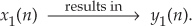
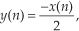
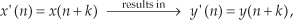
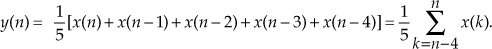
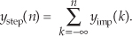

1 Discrete Sequences and Systems
Digital signal processing has never been more prevalent or easier to perform. It wasn’t that long ago when the fast Fourier transform (FFT), a topic we’ll discuss in Chapter 4, was a mysterious mathematical process used only in industrial research centers and universities. Now, amazingly, the FFT is readily available to us all. It’s even a built-in function provided by inexpensive spreadsheet software for home computers. The availability of more sophisticated commercial signal processing software now allows us to analyze and develop complicated signal processing applications rapidly and reliably. We can perform spectral analysis, design digital filters, develop voice recognition, data communication, and image compression processes using software that’s interactive both in the way algorithms are defined and how the resulting data are graphically displayed. Since the mid-1980s the same integrated circuit technology that led to affordable home computers has produced powerful and inexpensive hardware development systems on which to implement our digital signal processing designs.† Regardless, though, of the ease with which these new digital signal processing development systems and software can be applied, we still need a solid foundation in understanding the basics of digital signal processing. The purpose of this book is to build that foundation.
† During a television interview in the early 1990s, a leading computer scientist stated that had automobile technology made the same strides as the computer industry, we’d all have a car that would go a half million miles per hour and get a half million miles per gallon. The cost of that car would be so low that it would be cheaper to throw it away than pay for one day’s parking in San Francisco.
In this chapter we’ll set the stage for the topics we’ll study throughout the remainder of this book by defining the terminology used in digital signal processing, illustrating the various ways of graphically representing discrete signals, establishing the notation used to describe sequences of data values, presenting the symbols used to depict signal processing operations, and briefly introducing the concept of a linear discrete system.
1.1 Discrete Sequences and Their Notation
In general, the term signal processing refers to the science of analyzing time-varying physical processes. As such, signal processing is divided into two categories, analog signal processing and digital signal processing. The term analog is used to describe a waveform that’s continuous in time and can take on a continuous range of amplitude values. An example of an analog signal is some voltage that can be applied to an oscilloscope, resulting in a continuous display as a function of time. Analog signals can also be applied to a conventional spectrum analyzer to determine their frequency content. The term analog appears to have stemmed from the analog computers used prior to 1980. These computers solved linear differential equations by means of connecting physical (electronic) differentiators and integrators using old-style telephone operator patch cords. That way, a continuous voltage or current in the actual circuit was analogous to some variable in a differential equation, such as speed, temperature, air pressure, etc. (Although the flexibility and speed of modern-day digital computers have since made analog computers obsolete, a good description of the short-lived utility of analog computers can be found in reference [1].) Because present-day signal processing of continuous radio-type signals using resistors, capacitors, operational amplifiers, etc., has nothing to do with analogies, the term analog is actually a misnomer. The more correct term is continuous signal processing for what is today so commonly called analog signal processing. As such, in this book we’ll minimize the use of the term analog signals and substitute the phrase continuous signals whenever appropriate.
The term discrete-time signal is used to describe a signal whose independent time variable is quantized so that we know only the value of the signal at discrete instants in time. Thus a discrete-time signal is not represented by a continuous waveform but, instead, a sequence of values. In addition to quantizing time, a discrete-time signal quantizes the signal amplitude. We can illustrate this concept with an example. Think of a continuous sinewave with a peak amplitude of 1 at a frequency fo described by the equation
The frequency fo is measured in hertz (Hz). (In physical systems, we usually measure frequency in units of hertz. One Hz is a single oscillation, or cycle, per second. One kilohertz (kHz) is a thousand Hz, and a megahertz (MHz) is one million Hz.†) With t in Eq. 1-1 representing time in seconds, the fot factor has dimensions of cycles, and the complete 2πfot term is an angle measured in radians.
† The dimension for frequency used to be cycles/second; that’s why the tuning dials of old radios indicate frequency as kilocycles/second (kcps) or megacycles/second (Mcps). In 1960 the scientific community adopted hertz as the unit of measure for frequency in honor of the German physicist Heinrich Hertz, who first demonstrated radio wave transmission and reception in 1887.
Plotting Eq. (1-1), we get the venerable continuous sinewave curve shown in Figure 1-1(a). If our continuous sinewave represents a physical voltage, we could sample it once every ts seconds using an analog-to-digital converter and represent the sinewave as a sequence of discrete values. Plotting those individual values as dots would give us the discrete waveform in Figure 1-1(b). We say that Figure 1-1(b) is the “discrete-time” version of the continuous signal in Figure 1-1(a). The independent variable t in Eq. (1-1) and Figure 1-1(a) is continuous. The independent index variable n in Figure 1-1(b) is discrete and can have only integer values. That is, index n is used to identify the individual elements of the discrete sequence in Figure 1-1(b).
Figure 1-1 A time-domain sinewave: (a) continuous waveform representation; (b) discrete sample representation; (c) discrete samples with connecting lines.
Do not be tempted to draw lines between the dots in Figure 1-1(b). For some reason, people (particularly those engineers experienced in working with continuous signals) want to connect the dots with straight lines, or the stair-step lines shown in Figure 1-1(c). Don’t fall into this innocent-looking trap. Connecting the dots can mislead the beginner into forgetting that the x(n) sequence is nothing more than a list of numbers. Remember, x(n) is a discrete-time sequence of individual values, and each value in that sequence plots as a single dot. It’s not that we’re ignorant of what lies between the dots of x(n); there is nothing between those dots.
We can reinforce this discrete-time sequence concept by listing those Figure 1-1(b) sampled values as follows:
where n represents the time index integer sequence 0, 1, 2, 3, etc., and ts is some constant time period between samples. Those sample values can be represented collectively, and concisely, by the discrete-time expression
(Here again, the 2πfonts term is an angle measured in radians.) Notice that the index n in Eq. (1-2) started with a value of 0, instead of 1. There’s nothing sacred about this; the first value of n could just as well have been 1, but we start the index n at zero out of habit because doing so allows us to describe the sinewave starting at time zero. The variable x(n) in Eq. (1-3) is read as “the sequence x of n.” Equations (1-1) and (1-3) describe what are also referred to as time-domain signals because the independent variables, the continuous time t in Eq. (1-1), and the discrete-time nts values used in Eq. (1-3) are measures of time.
With this notion of a discrete-time signal in mind, let’s say that a discrete system is a collection of hardware components, or software routines, that operate on a discrete-time signal sequence. For example, a discrete system could be a process that gives us a discrete output sequence y(0), y(1), y(2), etc., when a discrete input sequence of x(0), x(1), x(2), etc., is applied to the system input as shown in Figure 1-2(a). Again, to keep the notation concise and still keep track of individual elements of the input and output sequences, an abbreviated notation is used as shown in Figure 1-2(b) where n represents the integer sequence 0, 1, 2, 3, etc. Thus, x(n) and y(n) are general variables that represent two separate sequences of numbers. Figure 1-2(b) allows us to describe a system’s output with a simple expression such as
Figure 1-2 With an input applied, a discrete system provides an output: (a) the input and output are sequences of individual values; (b) input and output using the abbreviated notation of x(n) and y(n).
Illustrating Eq. (1-4), if x(n) is the five-element sequence x(0) = 1, x(1) = 3, x(2) = 5, x(3) = 7, and x(4) = 9, then y(n) is the five-element sequence y(0) = 1, y(1) = 5, y(2) = 9, y(3) = 13, and y(4) = 17.
Equation (1-4) is formally called a difference equation. (In this book we won’t be working with differential equations or partial differential equations. However, we will, now and then, work with partially difficult equations.)
The fundamental difference between the way time is represented in continuous and discrete systems leads to a very important difference in how we characterize frequency in continuous and discrete systems. To illustrate, let’s reconsider the continuous sinewave in Figure 1-1(a). If it represented a voltage at the end of a cable, we could measure its frequency by applying it to an oscilloscope, a spectrum analyzer, or a frequency counter. We’d have a problem, however, if we were merely given the list of values from Eq. (1-2) and asked to determine the frequency of the waveform they represent. We’d graph those discrete values, and, sure enough, we’d recognize a single sinewave as in Figure 1-1(b). We can say that the sinewave repeats every 20 samples, but there’s no way to determine the exact sinewave frequency from the discrete sequence values alone. You can probably see the point we’re leading to here. If we knew the time between samples—the sample period ts—we’d be able to determine the absolute frequency of the discrete sinewave. Given that the ts sample period is, say, 0.05 milliseconds/sample, the period of the sinewave is
Because the frequency of a sinewave is the reciprocal of its period, we now know that the sinewave’s absolute frequency is 1/(1 ms), or 1 kHz. On the other hand, if we found that the sample period was, in fact, 2 milliseconds, the discrete samples in Figure 1-1(b) would represent a sinewave whose period is 40 milliseconds and whose frequency is 25 Hz. The point here is that when dealing with discrete systems, absolute frequency determination in Hz is dependent on the sampling frequency
We’ll be reminded of this dependence throughout the remainder of this book.
In digital signal processing, we often find it necessary to characterize the frequency content of discrete time-domain signals. When we do so, this frequency representation takes place in what’s called the frequency domain. By way of example, let’s say we have a discrete sinewave sequence x1(n) with an arbitrary frequency fo Hz as shown on the left side of Figure 1-3(a). We can also characterize x1(n) by showing its spectral content, the X1(m) sequence on the right side of Figure 1-3(a), indicating that it has a single spectral component, and no other frequency content. Although we won’t dwell on it just now, notice that the frequency-domain representations in Figure 1-3 are themselves discrete.
Figure 1-3 Time- and frequency-domain graphical representations: (a) sinewave of frequency fo; (b) reduced amplitude sinewave of frequency 2fo; (c) sum of the two sinewaves.
To illustrate our time- and frequency-domain representations further, Figure 1-3(b) shows another discrete sinewave x2(n), whose peak amplitude is 0.4, with a frequency of 2fo. The discrete sample values of x2(n) are expressed by the equation
When the two sinewaves, x1(n) and x2(n), are added to produce a new waveform xsum(n), its time-domain equation is
and its time- and frequency-domain representations are those given in Figure 1-3(c). We interpret the Xsum(m) frequency-domain depiction, the spectrum, in Figure 1-3(c) to indicate that xsum(n) has a frequency component of fo Hz and a reduced-amplitude frequency component of 2fo Hz.
Notice three things in Figure 1-3. First, time sequences use lowercase variable names like the “x” in x1(n), and uppercase symbols for frequency-domain variables such as the “X” in X1(m). The term X1(m) is read as “the spectral sequence X sub one of m.” Second, because the X1(m) frequency-domain representation of the x1(n) time sequence is itself a sequence (a list of numbers), we use the index “m” to keep track of individual elements in X1(m). We can list frequency-domain sequences just as we did with the time sequence in Eq. (1-2). For example, Xsum(m) is listed as
where the frequency index m is the integer sequence 0, 1, 2, 3, etc. Third, because the x1(n) + x2(n) sinewaves have a phase shift of zero degrees relative to each other, we didn’t really need to bother depicting this phase relationship in Xsum(m) in Figure 1-3(c). In general, however, phase relationships in frequency-domain sequences are important, and we’ll cover that subject in Chapters 3 and 5.
A key point to keep in mind here is that we now know three equivalent ways to describe a discrete-time waveform. Mathematically, we can use a time-domain equation like Eq. (1-6). We can also represent a time-domain waveform graphically as we did on the left side of Figure 1-3, and we can depict its corresponding, discrete, frequency-domain equivalent as that on the right side of Figure 1-3.
As it turns out, the discrete time-domain signals we’re concerned with are not only quantized in time; their amplitude values are also quantized. Because we represent all digital quantities with binary numbers, there’s a limit to the resolution, or granularity, that we have in representing the values of discrete numbers. Although signal amplitude quantization can be an important consideration—we cover that particular topic in Chapter 12—we won’t worry about it just now.
1.2 Signal Amplitude, Magnitude, Power
Let’s define two important terms that we’ll be using throughout this book: amplitude and magnitude. It’s not surprising that, to the layman, these terms are typically used interchangeably. When we check our thesaurus, we find that they are synonymous.† In engineering, however, they mean two different things, and we must keep that difference clear in our discussions. The amplitude of a variable is the measure of how far, and in what direction, that variable differs from zero. Thus, signal amplitudes can be either positive or negative. The time-domain sequences in Figure 1-3 presented the sample value amplitudes of three different waveforms. Notice how some of the individual discrete amplitude values were positive and others were negative.
† Of course, laymen are “other people.” To the engineer, the brain surgeon is the layman. To the brain surgeon, the engineer is the layman.
The magnitude of a variable, on the other hand, is the measure of how far, regardless of direction, its quantity differs from zero. So magnitudes are always positive values. Figure 1-4 illustrates how the magnitude of the x1(n) time sequence in Figure 1-3(a) is equal to the amplitude, but with the sign always being positive for the magnitude. We use the modulus symbol (||) to represent the magnitude of x1(n). Occasionally, in the literature of digital signal processing, we’ll find the term magnitude referred to as the absolute value.
Figure 1-4 Magnitude samples, |x1(n)|, of the time waveform in Figure 1-3(a).
When we examine signals in the frequency domain, we’ll often be interested in the power level of those signals. The power of a signal is proportional to its amplitude (or magnitude) squared. If we assume that the proportionality constant is one, we can express the power of a sequence in the time or frequency domains as
or
Very often we’ll want to know the difference in power levels of two signals in the frequency domain. Because of the squared nature of power, two signals with moderately different amplitudes will have a much larger difference in their relative powers. In Figure 1-3, for example, signal x1(n)’s amplitude is 2.5 times the amplitude of signal x2(n), but its power level is 6.25 that of x2(n)’s power level. This is illustrated in Figure 1-5 where both the amplitude and power of Xsum(m) are shown.
Figure 1-5 Frequency-domain amplitude and frequency-domain power of the xsum(n) time waveform in Figure 1-3(c).
Because of their squared nature, plots of power values often involve showing both very large and very small values on the same graph. To make these plots easier to generate and evaluate, practitioners usually employ the decibel scale as described in Appendix E.
1.3 Signal Processing Operational Symbols
We’ll be using block diagrams to graphically depict the way digital signal processing operations are implemented. Those block diagrams will comprise an assortment of fundamental processing symbols, the most common of which are illustrated and mathematically defined in Figure 1-6.
Figure 1-6 Terminology and symbols used in digital signal processing block diagrams.
Figure 1-6(a) shows the addition, element for element, of two discrete sequences to provide a new sequence. If our sequence index n begins at 0, we say that the first output sequence value is equal to the sum of the first element of the b sequence and the first element of the c sequence, or a(0) = b(0) + c(0). Likewise, the second output sequence value is equal to the sum of the second element of the b sequence and the second element of the c sequence, or a(1) = b(1) + c(1). Equation (1-7) is an example of adding two sequences. The subtraction process in Figure 1-6(b) generates an output sequence that’s the element-for-element difference of the two input sequences. There are times when we must calculate a sequence whose elements are the sum of more than two values. This operation, illustrated in Figure 1-6(c), is called summation and is very common in digital signal processing. Notice how the lower and upper limits of the summation index k in the expression in Figure 1-6(c) tell us exactly which elements of the b sequence to sum to obtain a given a(n) value. Because we’ll encounter summation operations so often, let’s make sure we understand their notation. If we repeat the summation equation from Figure 1-6(c) here, we have
This means that
We’ll begin using summation operations in earnest when we discuss digital filters in Chapter 5.
The multiplication of two sequences is symbolized in Figure 1-6(d). Multiplication generates an output sequence that’s the element-for-element product of two input sequences: a(0) = b(0)c(0), a(1) = b(1)c(1), and so on. The last fundamental operation that we’ll be using is called the unit delay in Figure 1-6(e). While we don’t need to appreciate its importance at this point, we’ll merely state that the unit delay symbol signifies an operation where the output sequence a(n) is equal to a delayed version of the b(n) sequence. For example, a(5) = b(4), a(6) = b(5), a(7) = b(6), etc. As we’ll see in Chapter 6, due to the mathematical techniques used to analyze digital filters, the unit delay is very often depicted using the term z−1.
The symbols in Figure 1-6 remind us of two important aspects of digital signal processing. First, our processing operations are always performed on sequences of individual discrete values, and second, the elementary operations themselves are very simple. It’s interesting that, regardless of how complicated they appear to be, the vast majority of digital signal processing algorithms can be performed using combinations of these simple operations. If we think of a digital signal processing algorithm as a recipe, then the symbols in Figure 1-6 are the ingredients.
1.4 Introduction to Discrete Linear Time-Invariant Systems
In keeping with tradition, we’ll introduce the subject of linear time-invariant (LTI) systems at this early point in our text. Although an appreciation for LTI systems is not essential in studying the next three chapters of this book, when we begin exploring digital filters, we’ll build on the strict definitions of linearity and time invariance. We need to recognize and understand the notions of linearity and time invariance not just because the vast majority of discrete systems used in practice are LTI systems, but because LTI systems are very accommodating when it comes to their analysis. That’s good news for us because we can use straightforward methods to predict the performance of any digital signal processing scheme as long as it’s linear and time invariant. Because linearity and time invariance are two important system characteristics having very special properties, we’ll discuss them now.
1.5 Discrete Linear Systems
The term linear defines a special class of systems where the output is the superposition, or sum, of the individual outputs had the individual inputs been applied separately to the system. For example, we can say that the application of an input x1(n) to a system results in an output y1(n). We symbolize this situation with the following expression:

Given a different input x2(n), the system has a y2(n) output as
For the system to be linear, when its input is the sum x1(n) + x2(n), its output must be the sum of the individual outputs so that
One way to paraphrase expression (1-13) is to state that a linear system’s output is the sum of the outputs of its parts. Also, part of this description of linearity is a proportionality characteristic. This means that if the inputs are scaled by constant factors c1 and c2, then the output sequence parts are also scaled by those factors as
In the literature, this proportionality attribute of linear systems in expression (1-14) is sometimes called the homogeneity property. With these thoughts in mind, then, let’s demonstrate the concept of system linearity.
1.5.1 Example of a Linear System
To illustrate system linearity, let’s say we have the discrete system shown in Figure 1-7(a) whose output is defined as

Figure 1-7 Linear system input-to-output relationships: (a) system block diagram where y(n) = −x(n)/2; (b) system input and output with a 1 Hz sinewave applied; (c) with a 3 Hz sinewave applied; (d) with the sum of 1 Hz and 3 Hz sinewaves applied.
that is, the output sequence is equal to the negative of the input sequence with the amplitude reduced by a factor of two. If we apply an x1(n) input sequence representing a 1 Hz sinewave sampled at a rate of 32 samples per cycle, we’ll have a y1(n) output as shown in the center of Figure 1-7(b). The frequency-domain spectral amplitude of the y1(n) output is the plot on the right side of Figure 1-7(b), indicating that the output comprises a single tone of peak amplitude equal to −0.5 whose frequency is 1 Hz. Next, applying an x2(n) input sequence representing a 3 Hz sinewave, the system provides a y2(n) output sequence, as shown in the center of Figure 1-7(c). The spectrum of the y2(n) output, Y2(m), confirming a single 3 Hz sinewave output is shown on the right side of Figure 1-7(c). Finally—here’s where the linearity comes in—if we apply an x3(n) input sequence that’s the sum of a 1 Hz sinewave and a 3 Hz sinewave, the y3(n) output is as shown in the center of Figure 1-7(d). Notice how y3(n) is the sample-for-sample sum of y1(n) and y2(n). Figure 1-7(d) also shows that the output spectrum Y3(m) is the sum of Y1(m) and Y2(m). That’s linearity.
1.5.2 Example of a Nonlinear System
It’s easy to demonstrate how a nonlinear system yields an output that is not equal to the sum of y1(n) and y2(n) when its input is x1(n) + x2(n). A simple example of a nonlinear discrete system is that in Figure 1-8(a) where the output is the square of the input described by
Figure 1-8 Nonlinear system input-to-output relationships: (a) system block diagram where y(n) = [x(n)]2; (b) system input and output with a 1 Hz sinewave applied; (c) with a 3 Hz sinewave applied; (d) with the sum of 1 Hz and 3 Hz sinewaves applied.
We’ll use a well-known trigonometric identity and a little algebra to predict the output of this nonlinear system when the input comprises simple sinewaves. Following the form of Eq. (1-3), let’s describe a sinusoidal sequence, whose frequency fo = 1 Hz, by
Equation (1-17) describes the x1(n) sequence on the left side of Figure 1-8(b). Given this x1(n) input sequence, the y1(n) output of the nonlinear system is the square of a 1 Hz sinewave, or
We can simplify our expression for y1(n) in Eq. (1-18) by using the following trigonometric identity:
Using Eq. (1-19), we can express y1(n) as
which is shown as the all-positive sequence in the center of Figure 1-8(b). Because Eq. (1-19) results in a frequency sum (α + β) and frequency difference (α − β) effect when multiplying two sinusoids, the y1(n) output sequence will be a cosine wave of 2 Hz and a peak amplitude of −0.5, added to a constant value of 1/2. The constant value of 1/2 in Eq. (1-20) is interpreted as a zero Hz frequency component, as shown in the Y1(m) spectrum in Figure 1-8(b). We could go through the same algebraic exercise to determine that when a 3 Hz sinewave x2(n) sequence is applied to this nonlinear system, the output y2(n) would contain a zero Hz component and a 6 Hz component, as shown in Figure 1-8(c).
System nonlinearity is evident if we apply an x3(n) sequence comprising the sum of a 1 Hz and a 3 Hz sinewave as shown in Figure 1-8(d). We can predict the frequency content of the y3(n) output sequence by using the algebraic relationship
where a and b represent the 1 Hz and 3 Hz sinewaves, respectively. From Eq. (1-19), the a2 term in Eq. (1-21) generates the zero Hz and 2 Hz output sinusoids in Figure 1-8(b). Likewise, the b2 term produces in y3(n) another zero Hz and the 6 Hz sinusoid in Figure 1-8(c). However, the 2ab term yields additional 2 Hz and 4 Hz sinusoids in y3(n). We can show this algebraically by using Eq. (1-19) and expressing the 2ab term in Eq. (1-21) as

† The first term in Eq. (1-22) is cos(2π · nts − 6π · nts) = cos(−4π · nts) = cos(−2π · 2 · nts). However, because the cosine function is even, cos(−α) = cos(α), we can express that first term as cos(2π · 2 · nts).
Equation (1-22) tells us that two additional sinusoidal components will be present in y3(n) because of the system’s nonlinearity, a 2 Hz cosine wave whose amplitude is +1 and a 4 Hz cosine wave having an amplitude of −1. These spectral components are illustrated in Y3(m) on the right side of Figure 1-8(d).
Notice that when the sum of the two sinewaves is applied to the nonlinear system, the output contained sinusoids, Eq. (1-22), that were not present in either of the outputs when the individual sinewaves alone were applied. Those extra sinusoids were generated by an interaction of the two input sinusoids due to the squaring operation. That’s nonlinearity; expression (1-13) was not satisfied. (Electrical engineers recognize this effect of internally generated sinusoids as intermodulation distortion.) Although nonlinear systems are usually difficult to analyze, they are occasionally used in practice. References [2], [3], and [4], for example, describe their application in nonlinear digital filters. Again, expressions (1-13) and (1-14) state that a linear system’s output resulting from a sum of individual inputs is the superposition (sum) of the individual outputs. They also stipulate that the output sequence y1(n) depends only on x1(n) combined with the system characteristics, and not on the other input x2(n); i.e., there’s no interaction between inputs x1(n) and x2(n) at the output of a linear system.
1.6 Time-Invariant Systems
A time-invariant system is one where a time delay (or shift) in the input sequence causes an equivalent time delay in the system’s output sequence. Keeping in mind that n is just an indexing variable we use to keep track of our input and output samples, let’s say a system provides an output y(n) given an input of x(n), or
For a system to be time invariant, with a shifted version of the original x(n) input applied, x′(n), the following applies:

where k is some integer representing k sample period time delays. For a system to be time invariant, Eq. (1-24) must hold true for any integer value of k and any input sequence.
1.6.1 Example of a Time-Invariant System
Let’s look at a simple example of time invariance illustrated in Figure 1-9. Assume that our initial x(n) input is a unity-amplitude 1 Hz sinewave sequence with a y(n) output, as shown in Figure 1-9(b). Consider a different input sequence x′(n), where
Figure 1-9 Time-invariant system input/output relationships: (a) system block diagram, y(n) = −x(n)/2; (b) system input/output with a sinewave input; (c) input/output when a sinewave, delayed by four samples, is the input.
Equation (1-25) tells us that the input sequence x′(n) is equal to sequence x(n) shifted to the right by k = −4 samples. That is, x′(4) = x(0), x′(5) = x(1), x′(6) = x(2), and so on as shown in Figure 1-9(c). The discrete system is time invariant because the y′(n) output sequence is equal to the y(n) sequence shifted to the right by four samples, or y′(n) = y(n−4). We can see that y′(4) = y(0), y′(5) = y(1), y′(6) = y(2), and so on as shown in Figure 1-9(c). For time-invariant systems, the time shifts in x′(n) and y′(n) are equal. Take careful notice of the minus sign in Eq. (1-25). In later chapters, that is the notation we’ll use to algebraically describe a time-delayed discrete sequence.
Some authors succumb to the urge to define a time-invariant system as one whose parameters do not change with time. That definition is incomplete and can get us in trouble if we’re not careful. We’ll just stick with the formal definition that a time-invariant system is one where a time shift in an input sequence results in an equal time shift in the output sequence. By the way, time-invariant systems in the literature are often called shift-invariant systems.†
† An example of a discrete process that’s not time invariant is the downsampling, or decimation, process described in Chapter 10.
1.7 The Commutative Property of Linear Time-Invariant Systems
Although we don’t substantiate this fact until we reach Section 6.11, it’s not too early to realize that LTI systems have a useful commutative property by which their sequential order can be rearranged with no change in their final output. This situation is shown in Figure 1-10 where two different LTI systems are configured in series. Swapping the order of two cascaded systems does not alter the final output. Although the intermediate data sequences f(n) and g(n) will usually not be equal, the two pairs of LTI systems will have identical y(n) output sequences. This commutative characteristic comes in handy for designers of digital filters, as we’ll see in Chapters 5 and 6.
Figure 1-10 Linear time-invariant (LTI) systems in series: (a) block diagram of two LTI systems; (b) swapping the order of the two systems does not change the resultant output y(n).
1.8 Analyzing Linear Time-Invariant Systems
As previously stated, LTI systems can be analyzed to predict their performance. Specifically, if we know the unit impulse response of an LTI system, we can calculate everything there is to know about the system; that is, the system’s unit impulse response completely characterizes the system. By “unit impulse response” we mean the system’s time-domain output sequence when the input is a single unity-valued sample (unit impulse) preceded and followed by zero-valued samples as shown in Figure 1-11(b).
Figure 1-11 LTI system unit impulse response sequences: (a) system block diagram; (b) impulse input sequence x(n) and impulse response output sequence y(n).
Knowing the (unit) impulse response of an LTI system, we can determine the system’s output sequence for any input sequence because the output is equal to the convolution of the input sequence and the system’s impulse response. Moreover, given an LTI system’s time-domain impulse response, we can find the system’s frequency response by taking the Fourier transform in the form of a discrete Fourier transform of that impulse response[5]. The concepts in the two previous sentences are among the most important principles in all of digital signal processing!
Don’t be alarmed if you’re not exactly sure what is meant by convolution, frequency response, or the discrete Fourier transform. We’ll introduce these subjects and define them slowly and carefully as we need them in later chapters. The point to keep in mind here is that LTI systems can be designed and analyzed using a number of straightforward and powerful analysis techniques. These techniques will become tools that we’ll add to our signal processing toolboxes as we journey through the subject of digital signal processing.
In the testing (analyzing) of continuous linear systems, engineers often use a narrow-in-time impulsive signal as an input signal to their systems. Mechanical engineers give their systems a little whack with a hammer, and electrical engineers working with analog-voltage systems generate a very narrow voltage spike as an impulsive input. Audio engineers, who need an impulsive acoustic test signal, sometimes generate an audio impulse by firing a starter pistol.
In the world of DSP, an impulse sequence called a unit impulse takes the form
The value A is often set equal to one. The leading sequence of zero-valued samples, before the A-valued sample, must be a bit longer than the length of the transient response of the system under test in order to initialize the system to its zero state. The trailing sequence of zero-valued samples, following the A-valued sample, must be a bit longer than the transient response of the system under test in order to capture the system’s entire y(n) impulse response output sequence.
Let’s further explore this notion of impulse response testing to determine the frequency response of a discrete system (and take an opportunity to start using the operational symbols introduced in Section 1.3). Consider the block diagram of a 4-point moving averager shown in Figure 1-12(a). As the x(n) input samples march their way through the system, at each time index n four successive input samples are averaged to compute a single y(n) output. As we’ll learn in subsequent chapters, a moving averager behaves like a digital lowpass filter. However, we can quickly illustrate that fact now.
Figure 1-12 Analyzing a moving averager: (a) averager block diagram; (b) impulse input and impulse response; (c) averager frequency magnitude response.
If we apply an impulse input sequence to the system, we’ll obtain its y(n) impulse response output shown in Figure 1-12(b). The y(n) output is computed using the following difference equation:
If we then perform a discrete Fourier transform (a process we cover in much detail in Chapter 3) on y(n), we obtain the Y(m) frequency-domain information, allowing us to plot the frequency magnitude response of the 4-point moving averager as shown in Figure 1-12(c). So we see that a moving averager indeed has the characteristic of a lowpass filter. That is, the averager attenuates (reduces the amplitude of) high-frequency signal content applied to its input.
OK, this concludes our brief introduction to discrete sequences and systems. In later chapters we’ll learn the details of discrete Fourier transforms, discrete system impulse responses, and digital filters.
References
[1] Karplus, W. J., and Soroka, W. W. Analog Methods, 2nd ed., McGraw-Hill, New York, 1959, p. 117.
[2] Mikami, N., Kobayashi, M., and Yokoyama, Y. “A New DSP-Oriented Algorithm for Calculation of the Square Root Using a Nonlinear Digital Filter,” IEEE Trans. on Signal Processing, Vol. 40, No. 7, July 1992.
[3] Heinen, P., and Neuvo, Y. “FIR-Median Hybrid Filters,” IEEE Trans. on Acoust. Speech, and Signal Proc., Vol. ASSP-35, No. 6, June 1987.
[4] Oppenheim, A., Schafer, R., and Stockham, T. “Nonlinear Filtering of Multiplied and Convolved Signals,” Proc. IEEE, Vol. 56, August 1968.
[5] Pickerd, John. “Impulse-Response Testing Lets a Single Test Do the Work of Thousands,” EDN, April 27, 1995.
Chapter 1 Problems
1.1 This problem gives us practice in thinking about sequences of numbers. For centuries mathematicians have developed clever ways of computing π. In 1671 the Scottish mathematician James Gregory proposed the following very simple series for calculating π:
Thinking of the terms inside the parentheses as a sequence indexed by the variable n, where n = 0, 1, 2, 3, . . ., 100, write Gregory’s algorithm in the form
replacing the “?” characters with expressions in terms of index n.
1.2 One of the ways to obtain discrete sequences, for follow-on processing, is to digitize a continuous (analog) signal with an analog-to-digital (A/D) converter. A 6-bit A/D converter’s output words (6-bit binary words) can only represent 26=64 different numbers. (We cover this digitization, sampling, and A/D converters in detail in upcoming chapters.) Thus we say the A/D converter’s “digital” output can only represent a finite number of amplitude values. Can you think of a continuous time-domain electrical signal that only has a finite number of amplitude values? If so, draw a graph of that continuous-time signal.
1.3 On the Internet, the author once encountered the following line of C-language code
PI = 2*asin(1.0);
whose purpose was to define the constant π. In standard mathematical notation, that line of code can be described by
π = 2 · sin−1(1).
Under what assumption does the above expression correctly define the constant π?
1.4 Many times in the literature of signal processing you will encounter the identity
x0 = 1.
That is, x raised to the zero power is equal to one. Using the Laws of Exponents, prove the above expression to be true.
1.5 Recall that for discrete sequences the ts sample period (the time period between samples) is the reciprocal of the sample frequency fs. Write the equations, as we did in the text’s Eq. (1-3), describing time-domain sequences for unity-amplitude cosine waves whose fo frequencies are
(a) fo = fs/2, one-half the sample rate,
(b) fo = fs/4, one-fourth the sample rate,
(c) fo = 0 (zero) Hz.
1.6 Draw the three time-domain cosine wave sequences, where a sample value is represented by a dot, described in Problem 1.5. The correct solution to Part (a) of this problem is a useful sequence used to convert some lowpass digital filters into highpass filters. (Chapter 5 discusses that topic.) The correct solution to Part (b) of this problem is an important discrete sequence used for frequency translation (both for signal down-conversion and up-conversion) in modern-day wireless communications systems. The correct solution to Part (c) of this problem should convince us that it’s perfectly valid to describe a cosine sequence whose frequency is zero Hz.
1.7 Draw the three time-domain sequences of unity-amplitude sinewaves (not cosine waves) whose frequencies are
(a) fo = fs/2, one-half the sample rate,
(b) fo = fs/4, one-fourth the sample rate,
(c) fo = 0 (zero) Hz.
The correct solutions to Parts (a) and (c) show us that the two frequencies, 0 Hz and fs/2 Hz, are special frequencies in the world of discrete signal processing. What is special about the sinewave sequences obtained from the above Parts (a) and (c)?
1.8 Consider the infinite-length time-domain sequence x(n) in Figure P1-8. Draw the first eight samples of a shifted time sequence defined by
xshift(n) = x(n+1).
1.9 Assume, during your reading of the literature of DSP, you encounter the process shown in Figure P1-9. The x(n) input sequence, whose fs sample rate is 2500 Hz, is multiplied by a sinusoidal m(n) sequence to produce the y(n) output sequence. What is the frequency, measured in Hz, of the sinusoidal m(n) sequence?
1.10 There is a process in DSP called an “N-point running sum” (a kind of digital lowpass filter, actually) that is described by the following equation:
Write out, giving the indices of all the x() terms, the algebraic expression that describes the computations needed to compute y(9) when N=6.
1.11 A 5-point moving averager can be described by the following difference equation:

The averager’s signal-flow block diagram is shown in Figure P1-11, where the x(n) input samples flow through the averager from left to right.
Equation (P1-1) is equivalent to
(a) Draw the block diagram of the discrete system described by Eq. (P1-2).
(b) The moving average processes described by Eqs. (P1-1) and (P1-2) have identical impulse responses. Draw that impulse response.
(c) If you had to implement (using programmable hardware or assembling discrete hardware components) either Eq. (P1-1) or Eq. (P1-2), which would you choose? Explain why.
1.12 In this book we will look at many two-dimensional drawings showing the value of one variable (y) plotted as a function of another variable (x). Stated in different words, we’ll graphically display what are the values of a y axis variable for various values of an x axis variable. For example, Figure P1-12(a) plots the weight of a male child as a function of the child’s age. The dimension of the x axis is years and the dimension of the y axis is kilograms. What are the dimensions of the x and y axes of the familiar two-dimensional plot given in Figure P1-12(b)?
1.13 Let’s say you are writing software code to generate an x(n) test sequence composed of the sum of two equal-amplitude discrete cosine waves, as
x(n) = cos(2πfonts + ϕ) + cos(2πfonts)
where ts is the time between your x(n) samples, and ϕ is a constant phase shift measured in radians. An example x(n) when ϕ = π/2 is shown in Figure P1-13 where the x(n) sequence, represented by the circular dots, is a single sinusoid whose frequency is fo Hz.
Using the trigonometric identity cos(α+β) + cos(α−β) = 2cos(α)cos(β), derive an equation for x(n) that is of the form
x(n) = 2cos(α)cos(β)
where variables α and β are in terms of 2πfonts and ϕ.
1.14 In your engineering education you’ll often read in some mathematical derivation, or hear someone say, “For small α, sin(α) = α.” (In fact, you’ll encounter that statement a few times in this book.) Draw two curves defined by
x = α, and y = sin(α)
over the range of α = −π/2 to α = π/2, and discuss why that venerable “For small α, sin(α) = α” statement is valid.
1.15 Considering two continuous (analog) sinusoids, having initial phase angles of α radians at time t = 0, replace the following “?” characters with the correct angle arguments:
(a) sin(2πfot + α) = cos(?).
(b) cos(2πfot + α) = sin(?).
1.16 National Instruments Corp. manufactures an A/D converter, Model #NI USB-5133, that is capable of sampling an analog signal at an fs sample rate of 100 megasamples per second (100 MHz). The A/D converter has internal memory that can store up to 4×106 discrete samples. What is the maximum number of cycles of a 25 MHz analog sinewave that can be stored in the A/D converter’s memory? Show your work.
1.17 In the first part of the text’s Section 1.5 we stated that for a process (or system) to be linear it must satisfy a scaling property that we called the proportionality characteristic in the text’s Eq. (1-14). Determine if the following processes have that proportionality characteristic:
(a) ya(n) = x(n−1)/6,
(b) yb(n) = 3 + x(n),
(c) yc(n) = sin[x(n)].
This problem is not “busy work.” Knowing if a process (or system) is linear tells us what signal processing principles, and algorithms, can be applied in the analysis of that process (or system).
1.18 There is an often-used process in DSP called decimation, and in that process we retain some samples of an x(n) input sequence and discard other x(n) samples. Decimation by a factor of two can be described algebraically by

where index m = 0,1,2,3,. . . The decimation defined by Eq. (P1-3) means that y(m) is equal to alternate samples (every other sample) of x(n). For example:
y(0) = x(0), y(1) = x(2), y(2) = x(4), y(3) = x(6), . . .
and so on. Here is the question: Is that decimation process time invariant? Illustrate your answer by decimating a simple sinusoidal x(n) time-domain sequence by a factor of two to obtain y(m). Next, create a shifted-by-one-sample version of x(n) and call it xshift(n). That new sequence is defined by
Finally, decimate xshift(n) according to Eq. (P1-3) to obtain yshift(m). The decimation process is time invariant if yshift(m) is equal to a time-shifted version of y(m). That is, decimation is time invariant if
yshift(m) = y(m+1).
1.19 In Section 1.7 of the text we discussed the commutative property of linear time-invariant systems. The two networks in Figure P1-19 exhibit that property. Prove this to be true by showing that, given the same x(n) input sequence, outputs y1(n) and y2(n) will be equal.
1.20 Here we investigate several simple discrete processes that turn out to be useful in a number of DSP applications. Draw the block diagrams, showing their inputs as x(n), of the processes described by the following difference equations:
(a) a 4th-order comb filter: yC(n) = x(n) − x(n−4),
(b) an integrator: yI(n) = x(n) + yI(n−1),
(c) a leaky integrator: yLI(n) = Ax(n) + (1−A)yLI(n−1) [the scalar value A is a real-valued constant in the range 0 < A < 1],
(d) a differentiator: yD(n) = 0.5x(n) − 0.5x(n-2).
1.21 Draw the unit impulse responses (the output sequences when the input is a unit sample impulse applied at time n = 0) of the four processes listed in Problem 1.20. Let A = 0.5 for the leaky integrator. Assume that all sample values within the systems are zero at time n = 0.
1.22 DSP engineers involved in building control systems often need to know what is the step response of a discrete system. The step response, ystep(n), can be defined in two equivalent ways. One way is to say that ystep(n) is a system’s response to an input sequence of all unity-valued samples. A second definition is that ystep(n) is the cumulative sum (the accumulation, discrete integration) of that system’s unit impulse response yimp(n). Algebraically, this second definition of step response is expressed as

In words, the above ystep(n) expression tells us: “The step response at time index n is equal to the sum of all the previous impulse response samples up to and including yimp(n).” With that said, what are the step responses of the four processes listed in Problem 1.20? (Let A = 0.5 for the leaky integrator.) Assume that all sample values within the system are zero at time n = 0.
1.23 Thinking about the spectra of signals, the ideal continuous (analog) squarewave s(t) in Figure P1-23, whose fundamental frequency is fo Hz, is equal to the sum of an fo Hz sinewave and all sinewaves whose frequencies are odd multiples of fo Hz. We call s(t) “ideal” because we assume the amplitude transitions from plus and minus A occur instantaneously (zero seconds!). Continuous Fourier analysis of the s(t) squarewave allows us to describe this sum of frequencies as the following infinite sum:
Using a summation symbol, we can express squarewave s(t) algebraically as
for n = odd integers only, showing s(t) to be an infinite sum of sinusoids.
(a) Imagine applying s(t) to a filter that completely removes s(t)’s lowest-frequency spectral component. Draw the time-domain waveform at the output of such a filter.
(b) Assume s(t) represents a voltage whose fo fundamental frequency is 1 Hz, and we wish to amplify that voltage to peak amplitudes of ±2A. Over what frequency range must an amplifier operate (that is, what must be the amplifier’s passband width) in order to exactly double the ideal 1 Hz squarewave’s peak-peak amplitude?
1.24 This interesting problem illustrates an illegal mathematical operation that we must learn to avoid in our future algebraic activities. The following claims to be a mathematical proof that 4 = 5. Which of the following steps is illegal? Explain why.
Proof that 4 = 5:
Step 1: 16 − 36 = 25 − 45
Step 2: 42 − 9 · 4 = 52 − 9 · 5
Step 3: 42 − 9 · 4 + 81/4 = 52 − 9 · 5 + 81/4
Step 4: (4 − 9/2)2 = (5 − 9/2)2
Step 5: 4 − 9/2 = 5 − 9/2
Step 6: 4 = 5